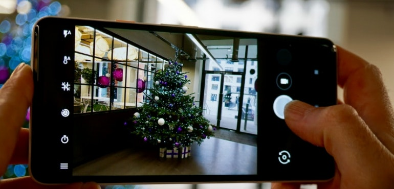

Post Lost or Found
Users can post a lost or found note. In the note page, the user can pin the specific location of the item found or lost on the map and add detailed descriptions such as photos to the item. All post information is stored in our Firebase database.
Search by Category
On our main page, users can directly search the items that are lost and not claimed. We categorize lost items in our database to allow users search more efficiently.
Login & Profile

In order to use our post feature, user have to login in to our app and create their own profile with their basic info. Within their profile, they can send messages to other users and view the posts they created. We use the Firebase Authentication API to help us realize the goal. All users' information will be stored in our Firebase database.
Camera & Messaging & GPS

(Camera)Users can first use their camera to take photos of items found or lost and add them to the post.
(Messaging)The messaging function allows logged in users to send messages to one another.
(GPS)The GPS feature allows users to directly pin the location of the item.